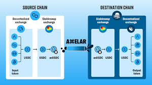

Swap DefiLlama The Future of Swapping: Will DeFiLlama Guide Us to the Promised Land (or Just Another Rug Pull)?
Remember that time I tried to swap some obscure meme coin for ETH, convinced I was about to become a crypto millionaire? Yeah, neither do I, really. The transaction fees alone ate half my investment, and the whole process felt like navigating a minefield blindfolded. That experience, however, perfectly encapsulates the early days of decentralized exchanges (DEXs). Chaotic, opaque, and frankly, a bit terrifying.
But things are changing. The DeFi landscape is evolving at breakneck speed, and with it, the way we swap tokens. We're moving beyond the wild west days of DEXs, and platforms like DeFiLlama are playing a crucial role in this evolution. But what exactly does the future hold? And can DeFiLlama truly be the trusty compass guiding us through this complex, ever-shifting terrain?
Initially, the appeal of DEXs was undeniable. Decentralization promised freedom from centralized exchanges, their fees, and their… let's just say questionable practices. We envisioned a utopian world of seamless, transparent transactions, where anyone could participate, regardless of their background. Sounds idyllic, right? Well, the reality, as my meme coin misadventure illustrates, has been slightly less… idyllic.
One of the biggest challenges has been user experience. Many DEX interfaces feel like they were designed by aliens for other aliens. Navigating the various pools, understanding slippage, and managing gas fees can be a headache, even for seasoned crypto veterans. This is where platforms like DeFiLlama step in. They provide crucial aggregated data, offering a much-needed bird's-eye view of the entire DeFi ecosystem. You can compare fees, liquidity, and overall health of various DEXs, essentially saving you the agonizing task of sifting through countless websites and documentation.
But here's where it gets interesting. DeFiLlama, while incredibly useful, isn't a magic bullet. It provides information, but it doesn't guarantee safety. We still need to be vigilant, because even with all the data available, the risk of scams and rug pulls remains. Think of it like this: DeFiLlama gives you a map, but it doesn't stop you from venturing into uncharted territory – a territory that might be teeming with… well, let's just say unfriendly creatures.
So, what’s the future? I honestly don't have a crystal ball (although, wouldn't that be amazing?). But I suspect we'll see DEXs becoming increasingly user-friendly. Think intuitive interfaces, streamlined processes, and possibly even automated portfolio management tools integrated directly into DEXs. The ambition is to make DeFi accessible to everyone, not just tech-savvy individuals.
DeFiLlama and similar aggregators will become even more critical in this future. They’ll act as gatekeepers, helping us navigate the increasingly complex landscape, but they will still need our vigilance and caution. The responsibility ultimately rests with us, the users.
This whole journey – from my initial disastrous meme coin swap to contemplating the future of DEXs with the help of DeFiLlama – has taught me a valuable lesson: The crypto world is a wild ride. It’s a journey filled with both immense potential and inherent risks. But with tools like DeFiLlama and a healthy dose of skepticism, we can hopefully minimize the risks and start truly harnessing the power of decentralized finance. And maybe, just maybe, avoid another embarrassing (and financially damaging) meme coin misadventure.

The Wild, Wild West (and Slightly Less Wild) of Swaps: My DefiLlama Journey
Remember that time I tried to swap ETH for DOGE? It was… an experience. Let's just say the gas fees alone could have bought me a small, slightly used, probably slightly haunted, car. That was, oh, maybe a year ago. Since then, I’ve been quietly obsessed with watching the DeFi space evolve, particularly the world of swaps, and DefiLlama has become my go-to crystal ball (or maybe slightly more accurate, a really detailed spreadsheet).
DefiLlama, for the uninitiated, is this incredible aggregator that tracks pretty much every DeFi protocol imaginable. It’s like a giant, constantly updating scoreboard for the decentralized finance Olympics, and the swap section is particularly fascinating. Watching it, you get a real sense of how the entire landscape has shifted.
Initially, it felt like the Wild West. Remember the Uniswap V2 days? Simple, elegant, but also… volatile. Slippage could be brutal, gas fees were astronomical (seriously, that haunted car still haunts my dreams), and finding the best rate felt like searching for a needle in a haystack made of… well, more gas fees. DefiLlama, even then, provided a level of transparency that was a lifesaver. It wasn’t perfect, but it offered a glimpse into the chaotic beauty of it all.
Then came the explosion of DEXes. SushiSwap, PancakeSwap, Curve – the list feels endless now. DefiLlama became even more crucial, allowing users to compare fees, liquidity, and the ever-important slippage across various platforms. It felt like the Wild West had gotten… slightly less wild. Maybe more like a bustling, slightly chaotic frontier town with a few saloons, a sheriff (DefiLlama itself, in a way), and some pretty shady characters lurking in the shadows.
But even with all the data at my fingertips, a nagging question remains: how do I choose? Is the slightly lower fee on one platform worth risking potentially higher slippage? Is the promise of a fancy new yield farming opportunity worth the complexity of navigating a complicated interface? DefiLlama helps, obviously, but it can’t replace the gut feeling – that tiny voice whispering "Don't trust that shady-looking algorithm" even when the numbers look great.
The evolution hasn't been linear, either. We've seen rug pulls, flash loan exploits, and moments of sheer, unadulterated panic. DefiLlama, in its own quiet way, chronicled it all. It's not just a data aggregator; it’s a historical record of a thrilling, terrifying, and occasionally hilarious journey.
And what about the future? Will we see even more sophisticated DEXes, perhaps ones that seamlessly integrate AI-powered routing to optimize swaps in real-time? Will gas fees ever become truly manageable? I honestly don’t know.
This whole journey with DefiLlama – observing the ever-shifting landscape of decentralized swaps – hasn’t just been about numbers and charts. It’s been about witnessing a rapidly evolving ecosystem, full of innovation, risk, and lessons learned, both the hard and the, uh, slightly less hard way. And, yes, about occasionally fantasizing about that slightly less haunted car I could have bought with those early gas fees. But hey, at least I have a great story to tell, and DefiLlama to help me navigate the next chapter.
DefiLlama's Getting a Facelift (And Maybe a New Wardrobe?)
Remember that time I tried to rearrange my entire apartment in a single weekend? It started with such high hopes: sleek minimalism! Zen-like organization! The reality, of course, was a chaotic explosion of furniture, boxes overflowing with questionable life choices, and a serious questioning of my life decisions. Building better infrastructure is a bit like that. You have this grand vision, but the actual process… well, let's just say it’s messy.
That's exactly where we are with DefiLlama right now. We're undergoing a significant infrastructure upgrade, and it’s frankly a bit terrifying (and thrilling!). For those unfamiliar, DefiLlama is like the Yelp of decentralized finance. We help users navigate the wild west of DeFi protocols, providing crucial data and comparisons. But like any rapidly growing platform, we've outgrown our initial infrastructure. Think of it like that tiny apartment I mentioned – it worked fine at first, but now we’ve got more users, more data, and frankly, a lot more… stuff.
The upgrade is a massive undertaking. We're talking about migrating to a completely new architecture, which is essentially rebuilding the whole engine while the car is still driving (metaphorically, of course. Although, wouldn’t that be impressive?). We're not just slapping on a fresh coat of paint; we're rethinking the fundamental structure. And that's where the "messy" part comes in. There will be hiccups, probably some unexpected detours, and maybe even a few moments where we’re all collectively wondering if we've bitten off more than we can chew.
I've seen the internal documents, the spreadsheets brimming with technical jargon that makes my eyes glaze over (don’t tell the engineers I said that!). It’s impressive, but also slightly overwhelming. The sheer scale of this undertaking is genuinely awe-inspiring—and slightly terrifying. Will it all work? Honestly, part of me is still nervously chewing my fingernails. But the other part of me is ridiculously excited.
Why? Because this upgrade isn't just about handling more traffic and data. It's about making DefiLlama faster, more reliable, and ultimately, a better experience for everyone. We’re talking about improved data accuracy, enhanced user interface, and a smoother, less-janky experience overall. It's about laying the foundation for even more ambitious features down the line – things we can't even fully imagine yet!
This isn’t just a technical endeavor; it's a testament to the community that uses and supports DefiLlama. Your feedback, your patience, your enthusiasm – it fuels this entire process. And knowing that we're doing this for you makes all the late nights, the caffeine-fueled coding marathons, and the moments of sheer panic slightly more bearable.
So, yeah, we're rebuilding the engine while the car is driving. There might be some bumps along the way, and the end result might not look exactly like the initial vision (much like my apartment remodel). But the journey itself, with all its imperfections and unexpected twists, is a testament to the power of growth, collaboration, and the unwavering belief in a better tomorrow (or at least, a more user-friendly DeFi data aggregator). And that, my friends, is worth every single bit of the chaos.
DefiLlama's Community Roadmap: A Wild, Wonderful, and Slightly Chaotic Mess (In a Good Way)
Okay, confession time. I’m not a hardcore DeFi bro. I mean, I understand the basic premise – decentralized finance, leveraging blockchain tech to bypass traditional banks, all that jazz. But honestly, trying to navigate the world of yield farming and liquidity pools felt like trying to assemble IKEA furniture blindfolded. It's a thrilling, slightly terrifying experience. So, when I started digging into DefiLlama's community-led innovation roadmap, I approached it with a healthy dose of both curiosity and… well, let's just say cautious optimism.
Swap DefiLlama , for those unfamiliar, is like the ultimate price comparison website for DeFi. It aggregates data from countless protocols, giving users a birds-eye view of the market. And what’s particularly fascinating is their approach to building the future: it's community-driven. Now, the idea of a community-led roadmap sounds all utopian and collaborative, like a Kumbaya session fueled by crypto. The reality? It’s a bit messier, a bit more chaotic, but ultimately, infinitely more interesting.
Think of it like this: instead of a single architect meticulously designing a skyscraper, you have a thousand people – each with their own blueprints, building materials (some questionable, let's be honest), and occasionally conflicting visions – all working together to construct something extraordinary. Will it be perfect? Probably not. Will it be… unique? Absolutely.
The roadmap itself is a living document, constantly evolving based on community feedback, proposals, and… well, sometimes just passionate arguments on Twitter. I spent hours poring over it, feeling like an anthropologist studying a particularly vibrant (and occasionally volatile) tribe. I saw proposals for new features ranging from the incredibly practical (improving data accuracy, enhancing user interfaces) to the wildly ambitious (integrating metaverse functionalities – because why not?).
And that’s the beauty of it, isn't it? This unfiltered, unfettered creativity. It’s a reflection of the DeFi space itself – a breeding ground for innovation, but also a hotbed of potential pitfalls. I found myself questioning some of the proposals. Are some of them too ambitious? Could some lead to unforeseen problems? Absolutely! But that’s the inherent risk – and reward – of this open-source, community-driven approach. It’s a messy, dynamic process, but it fosters a level of ownership and engagement that’s hard to replicate in a more traditional, top-down model.
There’s a certain humility in acknowledging that the roadmap isn't a flawless masterpiece. It's a work in progress, constantly shaped by the collective intelligence (and occasional disagreements) of the community. It's a reminder that even in the highly technical world of decentralized finance, human ingenuity and collaboration are still the most powerful tools we have.
And that's what initially struck me as slightly off-putting, then captivated me: the rawness of it all. There is no airbrushing, no carefully curated facade. It's a real-life experiment in collaborative development, and witnessing its unfolding has been surprisingly rewarding. I started off feeling somewhat lost in the complexities of DeFi, but now, through this roadmap, I feel a genuine connection to the community, a sense of shared purpose in building a truly decentralized future. It’s not always pretty, but it’s undeniably human. And that’s what makes it so compelling.
.jpeg)
DefiLlama's L2 Integration: My Brain Exploded (Slightly)
Okay, so picture this: it's 3 AM, I'm fueled by lukewarm coffee and the faint hope of finally understanding Layer-2 scaling solutions. My browser window is a chaotic mess of charts, graphs, and enough technical jargon to make a seasoned engineer weep. Why? Because DefiLlama, that beautiful, addictive aggregator of all things DeFi, just integrated a bunch of L2 scaling solutions, and my curiosity—okay, maybe obsession—got the better of me.
I’ll admit, my initial reaction was something akin to staring at a Jackson Pollock painting. Beautiful chaos, sure, but what does it mean? For those uninitiated, L2 scaling solutions are essentially bridges built to ease the congestion on Ethereum's main network. Think of Ethereum as a bustling city during rush hour – everyone's trying to get where they're going, but the traffic is a nightmare. L2s are like building new highways to alleviate that congestion. They allow transactions to happen faster and cheaper. Makes sense, right?
Except… well, it's not quite that simple. Reading about optimistic rollups, zk-rollups, and all the other acronyms felt like deciphering ancient hieroglyphs. I kept getting lost in the weeds, bouncing between explanations that were either overly simplistic or so technically dense I felt like I needed a PhD in cryptography just to understand the first sentence.
And then, DefiLlama happened. Suddenly, all those complicated concepts were presented in a way that… almost made sense. Seeing the TVL (Total Value Locked) numbers for each L2, visualized so cleanly, helped paint a picture. I could actually see the impact of these solutions on the DeFi ecosystem. It was like watching a complex symphony unfold, each instrument (L2) playing its part in a grand, decentralized orchestra.
But even with DefiLlama's user-friendly interface, I couldn't shake a few nagging questions. Are we just shifting the congestion, or truly solving the problem? Is one L2 inherently "better" than another? And, perhaps most importantly, will I ever truly understand the intricacies of a StarkEx proof system? (Probably not, at least not without a serious time commitment).
My journey through understanding DefiLlama's L2 integration felt a lot like learning a new language. There were moments of frustration, moments of "Aha!" clarity, and moments where I just wanted to throw my laptop across the room. But the process, even with its imperfections, was rewarding. It showed me the incredible power of clear visualization and intuitive design in demystifying complex technical concepts.
DefiLlama didn't just present the data; it contextualized it. It allowed me to see the bigger picture, to appreciate the ongoing evolution of the DeFi landscape, and, crucially, to see the impact of these often-abstract technologies in a very concrete way. It allowed me to make connections I wouldn't have otherwise made.
So, did my brain explode? Well, maybe not literally. But it certainly expanded. And that, I think, is the real magic of DefiLlama's L2 integration—it's not just a technical upgrade; it's a gateway to a deeper understanding of the future of decentralized finance, one beautifully visualized chart at a time. And that, my friends, is something worth celebrating, even at 3 AM with lukewarm coffee.
DefiLlama's Next Level: Beyond the Numbers, Towards Real Insight
Remember that time I tried to bake a cake following a recipe solely based on ingredient weights? Total disaster. The cake looked…sad. It tasted like sadness, too. The recipe told me what to do, but it didn't understand the process. That's kind of how I feel about a lot of DeFi analytics right now. DefiLlama, for all its glory in providing a beautifully presented overview of the decentralized finance landscape, sometimes feels like that sad cake. We see the ingredients (TVL, volume, etc.), but the why remains elusive. So, I’ve been thinking: what if DefiLlama’s next big leap isn't just more data, but smarter data – enhanced analytics that move beyond simple aggregation to genuine insight?
Right now, DefiLlama's strength is its comprehensiveness. It’s the go-to place to check the pulse of the DeFi world. You want to know the TVL of Uniswap? Boom. Want to compare it to Curve? Double boom. But I often find myself drowning in numbers. It's like staring at a spreadsheet that's as long as the Lord of the Rings trilogy – impressive, sure, but ultimately overwhelming. How do we distill this ocean of data into something truly actionable?
This is where enhanced analytics come in. Imagine, for instance, predictive models that could forecast potential market shifts based on subtle changes in trading volume and liquidity distribution. Think of algorithms that can identify emerging protocols poised for explosive growth – like spotting the next Solana before it hits the mainstream. Or perhaps even risk assessment tools that flag protocols exhibiting potentially unsustainable growth patterns – a DeFi equivalent of a "financial stress test," if you will.
Now, I know what some of you are thinking: "Easier said than done!" and you'd be absolutely right. Building these sophisticated analytical tools isn't a weekend project. It requires a massive investment in AI and machine learning expertise, robust data infrastructure, and frankly, some serious brainpower. There's also a potential for bias and unintended consequences – we don't want to create a system that reinforces existing inequalities or leads to flawed conclusions. It’s a complex challenge, fraught with ethical considerations.
But the potential rewards are immense. Think about the possibilities for average DeFi users. Suddenly, making informed investment decisions becomes far less risky. Identifying profitable opportunities becomes easier. And perhaps most importantly, the barrier to entry for new participants – often intimidated by the sheer complexity of the space – would significantly lower.
This isn't about replacing DefiLlama's existing functionality, but enhancing it. It's about building a layer of sophisticated interpretation on top of its existing robust data foundation. It's about transforming DefiLlama from a passive observer into an active participant in shaping the future of DeFi, a guide, a trusted advisor, rather than just a data aggregator.
So, where do we go from here? I don't have all the answers, and honestly, neither does anyone else. This is a conversation we need to have – a collaborative effort between DefiLlama’s developers, the DeFi community, and the wider world of data science. My initial thoughts, born from a frustrating experience with a sad cake and an overwhelming spreadsheet, may be just the starting point. But it's a starting point I believe is worth pursuing, because in the end, it's not just about the numbers; it's about understanding the story they tell. And that, my friends, is where the true magic of DeFi analytics lies.
DefiLlama's Global Gallop: A Multilingual Adventure in Decentralized Finance
Okay, confession time. I’m not fluent in Mandarin. Not even close. I can barely order dumplings, let alone navigate a complex DeFi protocol explained entirely in characters. Yet, here I am, writing about DefiLlama's breathtaking global user growth, a growth fueled by its multilingual support. It feels a bit like trying to bake a soufflé while juggling flaming torches – ambitious, slightly terrifying, and potentially delicious.
DefiLlama, for the uninitiated (and let’s be honest, the DeFi space is initiation-heavy), is a website that aggregates data across various decentralized finance platforms. Think of it as the Bloomberg Terminal, but for crypto bros (and -ettes!). It's incredibly useful, offering a consolidated view of the DeFi landscape. But what's truly fascinating isn't just its utility, it's its reach.
And that reach is, frankly, astounding. DefiLlama isn't just catering to the English-speaking world. They're actively translating their platform, courting users from across the globe. They're not just throwing spaghetti at the wall and hoping something sticks; they're meticulously crafting a truly international experience. This isn't just about hitting higher user numbers; it's about building a genuinely global community around decentralized finance.
Now, you might think: “Duh, globalization is the name of the game!” And you'd be right. But it’s more nuanced than that. It’s not just about slapping a Google Translate button on your website and calling it a day. Effective multilingual support requires understanding cultural contexts, different user expectations, and even subtle linguistic nuances. One misplaced word can completely change the meaning – and trust me, I've seen it happen with my disastrous attempts at ordering spicy noodles in Thailand.
Think about it: the DeFi space is still relatively new. Many users are still learning the ropes. To introduce them to this complex world in a language they understand, with a user interface that feels familiar and intuitive – that's a massive undertaking. It takes a dedicated team, significant resources, and a genuine commitment to inclusivity. It’s not just good business; it’s, dare I say it, ethical.
But here's where my inner cynic pokes its head out. Is this entirely altruistic? Of course not. More users mean more data, more engagement, and potentially, more revenue (although DefiLlama's business model is still evolving, as far as I understand). It's a smart business strategy, wrapped in a cloak of global accessibility. And that's okay! There's nothing wrong with wanting to build a successful product and making it accessible to everyone. In fact, it's often the successful products that manage to do both.
The journey of writing this piece has been a bit like exploring a new, vibrant city. I started with a single, somewhat cynical question, and ended up immersed in the details of DefiLlama’s global reach. I’ve learned more about the nuances of internationalization than I ever thought possible, and perhaps more importantly, I've gained a newfound appreciation for the effort that goes into building a truly global community. It's not just about the numbers; it's about the people, the cultures, and the shared human desire to understand and participate in a rapidly evolving financial landscape. And that, my friends, is something truly special.
The Carrot and the Stick (and Maybe a Few NFTs): Thinking About Incentives in DeFiLlama's Swap
Okay, confession time. I’m a sucker for a good rewards program. Free coffee punch cards? Sign me up. Airline miles that I'll probably never use? Absolutely. So, when I started digging into DeFiLlama’s Swap and its incentive structure, my inner loyalty-card-hoarding goblin was instantly intrigued. But it’s more complicated than just handing out free stuff, right? It's about building a sustainable ecosystem.
DeFiLlama, for those unfamiliar, is basically the go-to place for browsing decentralized finance protocols. Their Swap feature lets you compare different DEXs and their fees, like a Kayak for your crypto trades. So, how do they incentivize users to stick around and use Swap, rather than flitting between a dozen different aggregators? Well, that's where the rabbit hole – or, perhaps more accurately, the wormhole – gets interesting.
One obvious approach is offering rewards directly. Maybe a percentage back on each swap, or maybe even some juicy DeFiLlama-branded NFTs (I'd totally rock one, let's be honest). But designing these programs effectively is trickier than it seems. How much should you reward? Too little and you get a lukewarm response; too much and your treasury dries up faster than a spilled latte on a busy morning. It's a delicate balance, a careful dance between generosity and fiscal responsibility – a bit like trying to juggle flaming chainsaws while riding a unicycle.
And it’s not just about the monetary rewards. What about the intangible incentives? Is a clean, intuitive interface a reward in itself? Is the sheer satisfaction of finding the best possible swap rates enough to keep users coming back? I suspect it's a combination of factors. A well-designed user experience acts as a kind of silent, ever-present reward. Think of it as the pleasant background music to a great movie; you might not consciously notice it, but it significantly impacts your overall enjoyment.
But here’s where I start to get a little conflicted. Is solely relying on incentives, even clever ones, the best long-term strategy? Doesn't it create a system dependent on external rewards, rather than intrinsic value? What happens when the rewards dry up? Will users abandon ship? Will DeFiLlama Swap become a ghost town, a digital Pompeii buried under a mountain of forgotten tokens?
These aren't easy questions to answer. I don’t have all the solutions, or even a definitive opinion. But pondering these questions – the practical challenges of incentivizing user behavior, the inherent tension between short-term rewards and long-term sustainability – is what makes this stuff so fascinating to me.
Starting this article, I thought it would be a straightforward exploration of DeFiLlama's incentive programs. Now, I realize it’s been more of a reflection on the inherent complexities of building and maintaining a thriving decentralized ecosystem. It’s a reminder that while carrots and sticks might be useful tools, genuine user engagement comes from something deeper – a combination of compelling functionality, intuitive design, and a little bit of that intangible magic that keeps us coming back for more, reward programs or not. It’s a far cry from my initial thought of simply reviewing a rewards program; the exploration has been as insightful for me as (I hope) it is for you.
The Day I Almost Paid $5 for a Latte… and What It Taught Me About Zero-Fee Swaps
Okay, so picture this: I’m standing in line at my favorite coffee shop, ready to treat myself to a ridiculously overpriced but undeniably delicious latte. I’m already mentally preparing myself for the inevitable sticker shock, when – BAM – the barista tells me the total is… $5.00. Five dollars! For a latte! Suddenly, the thrill of caffeine is replaced by the bitter taste of transaction fees. It sounds dramatic, I know, but that feeling – that tiny pang of "I just paid way too much in fees" – is exactly what DeFiLlama's exploration of zero-fee swaps resonated with.
Now, I'm not a crypto guru. I’m more of a casual observer, someone who finds the whole blockchain thing fascinating but also slightly terrifying. So, when I saw DefiLlama's research into the potential of zero-fee swaps, my initial reaction was a skeptical but intrigued "huh?" Zero fees? In the world of cryptocurrency where even breathing seems to incur a gas fee? It sounded almost too good to be true, like a unicorn riding a unicycle while juggling blockchain technology.
The core idea, as I understand it, is leveraging various mechanisms to absorb or eliminate transaction fees. They're exploring things like charging fees on profitable trades only, bundling transactions, or even incorporating novel consensus mechanisms. It's all a bit heady, honestly. I had to reread certain sections a few times, and I'm still not 100% sure I grasp all the technical intricacies. But the potential is undeniably exciting.
Think about it: Imagine a world where swapping tokens isn't akin to navigating a minefield of unpredictable fees. Where a small-time investor doesn’t have to worry about their profits getting eaten up by gas. Where the barrier to entry for DeFi participation is significantly lowered. It’s not just about saving a few dollars; it's about making the whole DeFi ecosystem more accessible and, dare I say it, fun.
However, my inner cynic (a very vocal and persistent inner cynic, I might add) still whispers doubts. Will zero-fee swaps actually be sustainable? Who will bear the cost if not the user? Won't there be hidden fees or other compromises involved? And what about the security implications? These aren't frivolous concerns; they're legitimate questions that need thorough consideration. It's not a simple case of "abracadabra, zero fees!" The devil, as they say, is in the details.
The DefiLlama research, thankfully, doesn’t shy away from these complexities. It acknowledges the challenges and potential pitfalls, which I appreciate. It’s not trying to sell us a utopian fantasy; it’s presenting a thoughtful exploration of a potentially game-changing technology.
So, where does that leave me? Well, slightly less cynical than I started. The idea of zero-fee swaps still feels a bit like a unicorn riding a unicycle, but maybe, just maybe, it’s a unicorn with a really good business plan. The DefiLlama exploration is a valuable contribution, shining a light on a future where swapping crypto doesn't feel quite as much like paying $5 for a latte. And if it means I can finally afford that second latte without feeling completely robbed, well, consider me a convert. Even my inner cynic is cautiously optimistic. And that’s saying something.
The Wild West of Token Listings: My DefiLlama Swap Odyssey (and Why I Still Need Coffee)
Remember that time you tried to assemble IKEA furniture without the instructions? Screws everywhere, questionable stability, and a nagging feeling you’d somehow made a monster instead of a bookshelf? That's kind of how I felt navigating the new token listing process on Swap DefiLlama, at least initially. I’m not a crypto guru, just a curious soul trying to make sense of this ever-evolving DeFi landscape.
I've always been fascinated by the transparency (in theory, at least) of decentralized finance. But the reality? It can be a bit like deciphering ancient hieroglyphs sometimes. Case in point: trying to get a new token listed on Swap DefiLlama.
Initially, I was expecting something streamlined, maybe a simple form to fill out. Think more "submit resume" and less "negotiate a peace treaty between warring factions." Boy, was I wrong. The process is...well, let’s just say it's an adventure. There are multiple steps, layers of verification, and enough jargon to make your head spin faster than a Shiba Inu on caffeine.
First, you've got to grapple with the technical requirements. This isn't just about filling in blanks; it's about making sure your smart contract is squeaky clean, your documentation is impeccable, and your tokenomics make sense (and, ideally, don't sound like they were dreamt up by a caffeinated goblin). I spent a good chunk of time meticulously combing through everything, feeling like a meticulous librarian cataloging the most chaotic library ever conceived.
Then, there's the community aspect. You need to engage with the DefiLlama community, which, honestly, is a mix of brilliant minds and…well, let's just say some less-than-brilliant (but enthusiastic!) individuals. Navigating this social element is crucial, I learned. You're not just listing a token; you're building a narrative, a community around it. Think of it as pitching a startup, but with more memes.
The waiting game is arguably the most agonizing part. You submit your application and then...you wait. And wait. And wait some more. It's like waiting for your online order to arrive, except the stakes are considerably higher – this isn't just a new pair of socks, it’s your baby token's future. I found myself refreshing the page every five minutes, a habit I'm sure isn't healthy, but somehow weirdly addictive.
However, once I finally got past the initial hurdles, I started to appreciate the process's inherent rigor. Sure, it was challenging, but the thoroughness actually reassured me. It's a testament to DefiLlama's commitment to quality and security. They're not just letting any old token waltz onto their platform. This makes sense, considering the potential risks involved.
Now, I don't claim to be an expert, far from it. I still have questions – lots of them. Like, is there a secret handshake involved somewhere? Or a hidden level of the application that unlocks only after you correctly identify the five rarest crypto-themed memes? Maybe I just need more coffee.
This whole journey—the initial frustration, the slow realization of the system’s logic, and the eventual triumph (well, let's call it a partial triumph)—has shown me something incredibly valuable: DeFi might be decentralized, but building trust and credibility within it requires more than just code. It needs community, transparency, and a healthy dose of patience. And, yes, maybe some more coffee. It's been a bumpy ride, but even with the frustrations, I'm oddly grateful for the lesson. I wouldn’t trade the experience (and the newfound appreciation for IKEA instructions) for anything.

DefiLlama's Long Game: Will the Llama Keep Spitting Gold?
Remember that Tamagotchi craze back in the 90s? You'd nurture this digital pet, feeding it, cleaning it…then, inevitably, letting it starve because, let's be honest, real life intervened. I'm thinking about that now, pondering the long-term vision and sustainability of DefiLlama. Because while the platform currently thrives, displaying its impressive DeFi stats like a well-fed digital pet, the question remains: how do we ensure it doesn't end up a forgotten pixelated carcass on the digital dustbin of history?
DefiLlama, for the uninitiated (though, seriously, are you living under a rock?), is essentially the go-to dashboard for all things decentralized finance. It's a beautifully organized, almost addictive source of information on TVL, yields, protocols – everything a crypto curious soul (or seasoned whale) could desire. It's undeniably useful, even indispensable for many. But usefulness alone doesn't guarantee longevity.
The problem with platforms like DefiLlama is the inherent volatility of the crypto space. One minute, everyone's obsessed with yield farming, the next, it's all about NFTs, then the metaverse... the attention span of the crypto crowd is… well, let's just say it's not exactly known for its unwavering focus. How does DefiLlama adapt and remain relevant amidst this constant whirlwind of change?
Frankly, I’m not entirely sure. Part of me thinks the team behind it is brilliant. They’ve managed to build something so comprehensive and user-friendly it almost feels…magic. Almost. But then, another, more cynical part of me whispers, "What happens when the next big DeFi innovation renders their current model obsolete?" It's a valid fear, isn't it? We've seen it happen before – remember when MySpace reigned supreme?
One potential path forward, I believe, lies in community engagement. DefiLlama's success isn't just about the data; it's about fostering a community around that data. Imagine a platform where users can contribute data, propose features, even build upon DefiLlama’s existing framework. This kind of collaborative approach could transform it from a passive data source into a vibrant, evolving ecosystem.
Another vital element is diversification. Right now, DefiLlama is heavily focused on DeFi. While that's their bread and butter, spreading their wings a little might be wise. Exploring adjacent areas like NFTs, GameFi, or even integrating data from traditional finance could provide a much-needed safety net. Think of it as investing your crypto portfolio – diversification is key, right?
Looking back on this little musing, Swap DefiLlama strikes me that worrying about DefiLlama’s future is, in a strange way, a testament to its current success. It’s because it’s so useful, so integral to the DeFi landscape, that we even bother to consider its long-term sustainability. It’s no longer just a tool; it’s a part of the ecosystem, a sort of digital oracle that we’ve come to rely on.
So, will the llama keep spitting gold? I honestly don’t know. But I hope it does. Because a thriving DefiLlama means a more transparent, more accessible, and ultimately, more robust DeFi space. And that’s something worth fighting for, even if it means wrestling with the uncertainties of the ever-evolving crypto world. Just, please, don’t let it starve. We’ve all been there with our Tamagotchis.
tags: Decentralized Finance, DeFi, Decentralized Exchanges, DEX, Swap, DefiLlama, Crypto, Blockchain, Web3, Future of Finance